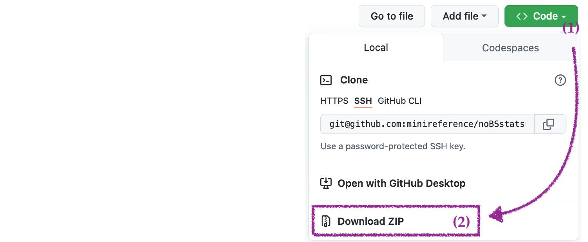

Section 1.2 — Data in practice#
This notebook contains all the code from Section 1.2 Data in practice of the No Bullshit Guide to Statistics.
Notebook setup#
# Ensure required Python modules are installed
%pip install --quiet numpy seaborn pandas ministats
[notice] A new release of pip is available: 26.0 -> 26.0.1
[notice] To update, run: pip install --upgrade pip
Note: you may need to restart the kernel to use updated packages.
# simple float __repr__
import numpy as np
if int(np.__version__.split(".")[0]) >= 2:
np.set_printoptions(legacy='1.25')
# Download datasets/ directory if necessary
from ministats import ensure_datasets
ensure_datasets()
Found ../datasets/ and copied files to datasets/.
Getting started with JupyterLab#
Download and install JupyterLab Desktop#
Follow instructions in the Python tutorial to install JupyterLab Desktop on your computer.
Download the noBSstats notebooks and datasets#
Go to URL minireference/noBSstats and use the Code dropdown button to download the ZIP archive of the entire repository.

After downloading the ZIP archive,
double-click on the file to extract its contents,
and move the resulting folder noBSstats to a location on your computer
where you normally keep your documents.
The ZIP archive includes all the datasets and computational notebooks for the book.
Use the File browser pane on the right
to navigate to the location where you saved the noBSstats folder
and explore the subfolders datasets, notebooks, exercises, tutorials, etc.
Datasets for the book#
The datasets folder contains all the datasets used in examples and exercises throughout the book.
id |
filename |
relative path |
url |
|---|---|---|---|
0 |
players.csv |
datasets/players.csv |
|
1 |
apples.csv |
datasets/apples.csv |
|
2 |
eprices.csv |
datasets/eprices.csv |
|
2w |
epriceswide.csv |
datasets/epriceswide.csv |
|
3 |
students.csv |
datasets/students.csv |
|
4 |
kombucha.csv |
datasets/kombucha.csv |
|
4p |
kombuchapop.csv |
datasets/kombuchapop.csv |
|
5 |
doctors.csv |
datasets/doctors.csv |
|
6 |
visitors.csv |
datasets/visitors.csv |
|
D |
minimal.csv |
datasets/minimal.csv |
Interactive notebooks for each section#
The notebooks folder contains the jupyter notebooks associated with each section of the book,
similar to the one you’re currently looking at.
section |
notebook name |
|---|---|
Section 1.1 |
11_intro_to_data.ipynb |
Section 1.2 |
12_data_in_practice.ipynb |
Section 1.3 |
13_descriptive_statistics.ipynb |
Section 2.1 |
21_discrete_random_vars.ipynb |
Section 2.2 |
22_multiple_random_vars.ipynb |
Section 2.3 |
23_inventory_discrete_dists.ipynb |
Section 2.4 |
24_continuous_random_vars.ipynb |
Section 2.5 |
25_multiple_continuous_random_vars.ipynb |
Section 2.5 |
26_inventory_continuous_dists.ipynb |
Section 2.6 |
27_simulations.ipynb |
Section 2.7 |
28_random_samples.ipynb |
Section 3.1 |
31_estimators.ipynb |
Section 3.2 |
32_confidence_intervals.ipynb |
Section 3.3 |
33_intro_to_NHST.ipynb |
Section 3.4 |
34_analytical_approx.ipynb |
Section 3.5 |
35_two_sample_tests.ipynb |
Section 3.6 |
36_design.ipynb |
Section 3.7 |
37_inventory_stats_tests.ipynb |
Section 4.1 |
41_introduction_to_LMs.ipynb |
Exercises notebooks#
The exercises folder contains starter notebooks for the exercises in each section.
section |
notebook name |
|---|---|
Section 1.2 |
exercises_12_practical_data.ipynb |
Section 1.3 |
exercises_13_descr_stats.ipynb |
Section 2.1 |
exercises_21_discrete_RVs.ipynb |
Section 3.1 |
exercises_31_estimtors.ipynb |
Section 3.2 |
exercises_32_confidence_intervals.ipynb |
Section 3.3 |
exercises_33_intro_to_NHST.ipynb |
Section 3.5 |
exercises_35_two_sample_tests.ipynb |
Data management with Pandas#
The first step is to import the Pandas library.
We’ll follow the standard convention of importing the pandas module under the alias pd.
import pandas as pd
Loading datasets#
Players dataset#
Consider the data file players.csv located in the datasets directory.
The file extension .csv tells us the file contains text data formatted as Comma-Separated Values (CSV).
We can use the command %pycat to print the raw contents of the this file.
%pycat datasets/players.csv
We see the file contains 13 lines of text, and each line contains—as promised by the .csv file extension—values separated by commas.
The first line in the data file is called the “header” and contains the names of the variable names.
We can create a the data frame object from the players dataset located at datasets/players.csv
by calling the function pd.read_csv.
players = pd.read_csv("datasets/players.csv")
players
| username | country | age | ezlvl | time | points | finished | |
|---|---|---|---|---|---|---|---|
| 0 | mary | us | 38 | 0 | 124.94 | 418 | 0 |
| 1 | jane | ca | 21 | 0 | 331.64 | 1149 | 1 |
| 2 | emil | fr | 52 | 1 | 324.61 | 1321 | 1 |
| 3 | ivan | ca | 50 | 1 | 39.51 | 226 | 0 |
| 4 | hasan | tr | 26 | 1 | 253.19 | 815 | 0 |
| 5 | jordan | us | 45 | 0 | 28.49 | 206 | 0 |
| 6 | sanjay | ca | 27 | 1 | 350.00 | 1401 | 1 |
| 7 | lena | uk | 23 | 0 | 408.76 | 1745 | 1 |
| 8 | shuo | cn | 24 | 1 | 194.77 | 1043 | 0 |
| 9 | r0byn | us | 59 | 0 | 255.55 | 1102 | 0 |
| 10 | anna | pl | 18 | 0 | 303.66 | 1209 | 1 |
| 11 | joro | bg | 22 | 1 | 381.97 | 1491 | 1 |
Data frame properties#
What type of object is players ?
type(players)
pandas.core.frame.DataFrame
The players data frame object has a bunch of useful properties (attributes)
and functions (methods) “attached” to it,
which we can access using the dot syntax.
The shape of the players data frame#
players.shape
(12, 7)
The rows index#
len(players.index)
12
players.index
RangeIndex(start=0, stop=12, step=1)
list(players.index)
[0, 1, 2, 3, 4, 5, 6, 7, 8, 9, 10, 11]
The columns index#
len(players.columns)
7
players.columns
Index(['username', 'country', 'age', 'ezlvl', 'time', 'points', 'finished'], dtype='object')
list(players.columns)
['username', 'country', 'age', 'ezlvl', 'time', 'points', 'finished']
Exploring data frame objects#
players.head(3)
# players.tail(3)
# players.sample(3)
| username | country | age | ezlvl | time | points | finished | |
|---|---|---|---|---|---|---|---|
| 0 | mary | us | 38 | 0 | 124.94 | 418 | 0 |
| 1 | jane | ca | 21 | 0 | 331.64 | 1149 | 1 |
| 2 | emil | fr | 52 | 1 | 324.61 | 1321 | 1 |
Data types#
players.dtypes
username object
country object
age int64
ezlvl int64
time float64
points int64
finished int64
dtype: object
players.info()
<class 'pandas.core.frame.DataFrame'>
RangeIndex: 12 entries, 0 to 11
Data columns (total 7 columns):
# Column Non-Null Count Dtype
--- ------ -------------- -----
0 username 12 non-null object
1 country 12 non-null object
2 age 12 non-null int64
3 ezlvl 12 non-null int64
4 time 12 non-null float64
5 points 12 non-null int64
6 finished 12 non-null int64
dtypes: float64(1), int64(4), object(2)
memory usage: 800.0+ bytes
Accessing values in a DataFrame#
Selecting individual values#
The player with username emil has index 2 in the data frame.
To see the value of the points variable for the player emil,
we use the following expression based on the .loc[] selector syntax.
players.loc[2, "points"]
1321
Selecting entire rows#
Let’s now select all the measurements we have for Sanjay (the player at index 6).
players.loc[6,:] # == players.loc[6]
username sanjay
country ca
age 27
ezlvl 1
time 350.0
points 1401
finished 1
Name: 6, dtype: object
Selecting entire columns#
We use the square brackets to select columns from a data frame.
For example,
this is how we extract the "age" column from the players data frame.
players["age"]
0 38
1 21
2 52
3 50
4 26
5 45
6 27
7 23
8 24
9 59
10 18
11 22
Name: age, dtype: int64
Selecting multiple columns#
We can select multiple columns by using list of column names inside the square brackets.
players[ ["username","country"] ]
| username | country | |
|---|---|---|
| 0 | mary | us |
| 1 | jane | ca |
| 2 | emil | fr |
| 3 | ivan | ca |
| 4 | hasan | tr |
| 5 | jordan | us |
| 6 | sanjay | ca |
| 7 | lena | uk |
| 8 | shuo | cn |
| 9 | r0byn | us |
| 10 | anna | pl |
| 11 | joro | bg |
Statistical calculations using Pandas#
Let’s extract the values from the "age" column from the players data frame
and store them as new variable called ages.
We intentionally choose the name ages (plural of the column name)
to remember where the data comes from.
ages = players["age"]
ages
0 38
1 21
2 52
3 50
4 26
5 45
6 27
7 23
8 24
9 59
10 18
11 22
Name: age, dtype: int64
The variable ages is a Pandas series object.
type(ages)
pandas.core.series.Series
We can access individual values within the series ages using the square brackets.
ages[6]
27
Series attributes#
The Pandas series ages has the same index as the players data frame.
ages.index
RangeIndex(start=0, stop=12, step=1)
The series ages also “remembers” the name of the column from which it was extracted.
ages.name
'age'
We sometimes want to see the data without the index.
We can do this by accessing the .values attribute of the series.
ages.values
array([38, 21, 52, 50, 26, 45, 27, 23, 24, 59, 18, 22])
Series methods#
ages.count()
12
Alternatively,
since series objects are list-like,
we can use the Python build in function len to find the length of the series.
len(ages)
12
ages.sum()
405
The average value of a list of \(n\) values \(\mathbf{x} = [x_1, x_2, \ldots, x_n]\) is computed using the formula \(\overline{\mathbf{x}} = \tfrac{1}{n}\!\left( x_1 + x_2 + \cdots + x_n \right)\). This formula says that the average is computed by summing together all the values in the list \(\mathbf{x}\) and dividing by the length of the list \(n\).
The expression for computing the average age using Pandas methods is as follows:
ages.sum() / ages.count()
33.75
An equivalent,
more direct,
way to compute the arithmetic mean of the values in the series ages
is to call its .mean() method.
ages.mean()
33.75
The standard deviation (dispersion from the mean) is another common statistic that we might want to calculate for a variable in a dataset.
ages.std()
14.28365244861157
Pandas series and data frames objects have numerous other methods for computing numerical data summaries, which are called the descriptive statistics of the variable. We’ll learn more about those in Section 1.3 Descriptive statistics.
Selecting only certain rows (filtering)#
We often want to select a subset of the rows of a data frame that fit one or more criteria. This is equivalent to “filtering out” the rows that don’t satisfy these criteria. We use a two-step procedure for this:
Step 1: Build a “selection mask” series that consists of boolean values (
TrueorFalse).Step 2: Select the subset of rows from the data frame using the mask. The result is a new data frame that contains only the rows that correspond to the
Truevalues in the selection mask.
To select only rows where ezlvl is 1, we first build the boolean selection mask (Step 1)…
mask = players["ezlvl"] == 1
mask
0 False
1 False
2 True
3 True
4 True
5 False
6 True
7 False
8 True
9 False
10 False
11 True
Name: ezlvl, dtype: bool
… then select the rows using the mask (Step 2).
players[mask]
| username | country | age | ezlvl | time | points | finished | |
|---|---|---|---|---|---|---|---|
| 2 | emil | fr | 52 | 1 | 324.61 | 1321 | 1 |
| 3 | ivan | ca | 50 | 1 | 39.51 | 226 | 0 |
| 4 | hasan | tr | 26 | 1 | 253.19 | 815 | 0 |
| 6 | sanjay | ca | 27 | 1 | 350.00 | 1401 | 1 |
| 8 | shuo | cn | 24 | 1 | 194.77 | 1043 | 0 |
| 11 | joro | bg | 22 | 1 | 381.97 | 1491 | 1 |
The above two step process can be combined into a more compact expression:
players[players["ezlvl"]==1]
| username | country | age | ezlvl | time | points | finished | |
|---|---|---|---|---|---|---|---|
| 2 | emil | fr | 52 | 1 | 324.61 | 1321 | 1 |
| 3 | ivan | ca | 50 | 1 | 39.51 | 226 | 0 |
| 4 | hasan | tr | 26 | 1 | 253.19 | 815 | 0 |
| 6 | sanjay | ca | 27 | 1 | 350.00 | 1401 | 1 |
| 8 | shuo | cn | 24 | 1 | 194.77 | 1043 | 0 |
| 11 | joro | bg | 22 | 1 | 381.97 | 1491 | 1 |
Sorting data frames#
players.sort_values("time", ascending=False)
| username | country | age | ezlvl | time | points | finished | |
|---|---|---|---|---|---|---|---|
| 7 | lena | uk | 23 | 0 | 408.76 | 1745 | 1 |
| 11 | joro | bg | 22 | 1 | 381.97 | 1491 | 1 |
| 6 | sanjay | ca | 27 | 1 | 350.00 | 1401 | 1 |
| 1 | jane | ca | 21 | 0 | 331.64 | 1149 | 1 |
| 2 | emil | fr | 52 | 1 | 324.61 | 1321 | 1 |
| 10 | anna | pl | 18 | 0 | 303.66 | 1209 | 1 |
| 9 | r0byn | us | 59 | 0 | 255.55 | 1102 | 0 |
| 4 | hasan | tr | 26 | 1 | 253.19 | 815 | 0 |
| 8 | shuo | cn | 24 | 1 | 194.77 | 1043 | 0 |
| 0 | mary | us | 38 | 0 | 124.94 | 418 | 0 |
| 3 | ivan | ca | 50 | 1 | 39.51 | 226 | 0 |
| 5 | jordan | us | 45 | 0 | 28.49 | 206 | 0 |
Ranking (optional material)#
We can also rank the players according to the time variable
by using the method .rank() on the "time" column.
players["time"].rank(ascending=False)
0 10.0
1 4.0
2 5.0
3 11.0
4 8.0
5 12.0
6 3.0
7 1.0
8 9.0
9 7.0
10 6.0
11 2.0
Name: time, dtype: float64
The rank of an element in a list tells us the position it appears in when the list is sorted.
We see from the players-ranked-by-time results that the player at index 7 has rank 1 (first),
and the player at index 5 is ranked 12 (last).
Data visualization with Seaborn#
The first step is to import the seaboarn module
under the alias sns.
import seaborn as sns
All the Seaborn functions are now available under sns..
Strip plot of the time variable#
To generate a strip plot,
we pass the data frame players as the data argument to the Seaborn function sns.stripplot,
and specify the column name "time" (in quotes) as the x argument.
sns.stripplot(data=players, x="time");
We can enhance the strip plot by mapping the ezlvl variable to the colour (hue) of the points in the plot.
sns.stripplot(data=players, x="time", hue="ezlvl");
Studying the effect of ezlvl on time#
The players dataset was collected as part of an experiment
designed to answer the question “Does the easy first level lead to an improvement in user retention?”
We want to compare the time variable (total time players spent in the game)
of players who were shown the “easy level” version of the game (ezlvl==1)
to the control group of played who played the regular vesion of the game (ezlvl==0).
The mean time in the intervention group is:
mean1 = players[players["ezlvl"]==1]["time"].mean()
mean1
257.34166666666664
The mean time in the control group is:
mean0 = players[players["ezlvl"]==0]["time"].mean()
mean0
242.17333333333332
Let’s generate a strip plot of the time variable for the two groups of players.
sns.stripplot(data=players, x="time", y="ezlvl",
hue="ezlvl", orient="h", legend=None);
# # BONUS. stripplot with markers for the group means
# sns.stripplot(data=players, x="time", y="ezlvl",
# hue="ezlvl", orient="h", legend=None)
# sns.stripplot(x=[mean0], y=[0], marker="D", orient="h", color="b")
# sns.stripplot(x=[mean1], y=[1], marker="D", orient="h", color="r")
Studying the relationship between age and time#
The secondary research question,
is to look for a correlation between the age variable and the time variable.
sns.scatterplot(data=players, x="age", y="time");

We can also create a linear regression plot using the regplot function.
sns.regplot(data=players, x="age", y="time", ci=None);

We’ll learn more about linear regression in Chapter 4.
Real-world datasets#
Imagine you’re a data scientist consulting with various clients. Clients come to you with datasets and real-world questions they want to answer using statistical analysis. The following table shows the complete list of the datasets that we’ll use in examples and explanations in the rest of the book. The last column of the table tells us the sections of the book where each dataset will be discussed.
index |
client name |
filename |
shape |
sections |
|---|---|---|---|---|
|
12x7 |
1.1, 1.2 |
||
1 |
Alice |
|
30x1 |
3.1, 3.2 |
2 |
Bob |
|
18x2 |
3.1, 3.5 |
3 |
Charlotte |
|
15x5 |
1.3, 3.1, 3.5, 4.1 |
4 |
Khalid |
|
347x2 |
3.1, 3.2, 3.3, 3.4 |
5 |
Dan |
|
157x12 |
3.1, 3.2, 3.5, 4.1 |
6 |
Vanessa |
|
2000x3 |
3.6 |
|
5x4 |
Appendix D |
Let’s briefly describe the background story behind each dataset and state the statistical question that each client is interested in answering.
Apple weights#
Alice runs an apple orchard.
She collected a sample from the apples harvested this year (the population)
and sent you the data in a CSV file called apples.csv.
You start by loading the data into Pandas and looking at its characteristics.
apples = pd.read_csv("datasets/apples.csv")
apples.shape
(30, 1)
The first three observations in the apples dataset are:
apples.head(3)
| weight | |
|---|---|
| 0 | 205.0 |
| 1 | 182.0 |
| 2 | 192.0 |
The sample mean is:
apples['weight'].mean()
202.6
sns.stripplot(data=apples, x="weight", jitter=0, alpha=0.5);
Electricity prices#
Bob recently bought an electric car. He doesn’t have a charging station for his car at home, so he goes to public charging stations to recharge the car’s batteries. Bob lives downtown, so he can go either to the East End or West End of the city for charging. He wants to know which side of the city has cheaper prices. Are electricity prices cheaper in the East End or the West End of the city?
To study this question,
Bob collected electricity prices of East End and West End charging stations
from a local price comparison website
and provided you the prices in the dataset eprices.csv.
eprices = pd.read_csv("datasets/eprices.csv")
eprices.shape
(18, 2)
The first three observations in the electricity prices dataset are:
eprices.head(3)
| loc | price | |
|---|---|---|
| 0 | East | 7.7 |
| 1 | East | 5.9 |
| 2 | East | 7.0 |
The average price in the West End is:
eprices[eprices["loc"]=="West"]["price"].mean()
9.155555555555557
The average price in the East End is:
eprices[eprices["loc"]=="East"]["price"].mean()
6.155555555555556
Let’s create a strip plot of electricity prices along the \(x\)-axis
and use the loc variable to control the \(y\)-position and colour of the points.
sns.stripplot(data=eprices, x="price", y="loc", hue="loc");
Students’ scores#
Charlotte is a science teacher who wants to test the effectiveness of a new teaching method in which material is presented in the form of a “scientific debate”. Student actors initially express “wrong” opinions, which are then corrected by presenting the “correct” way to think about science concepts. This type of teaching is in contrast to the usual lecture method, in which the teacher presents only the correct facts.
To compare the effectiveness of the two teaching methods, she has prepared two variants of her course:
In the
lecturevariant, the video lessons present the material in the usual lecture format that includes only correct facts and explanations.In the
debatevariant, the same material is covered through video lessons in which student actors express multiple points of view, including common misconceptions.
Except for the different video lessons, the two variants of the course are identical: they cover the same topics, use the same total lecture time, and test students’ knowledge using the same assessment items.
Let’s load the data file students.csv into Pandas and see what it looks like.
students = pd.read_csv("datasets/students.csv")
students.shape
(15, 5)
The first five observations in the students dataset are:
students.head()
| student_ID | background | curriculum | effort | score | |
|---|---|---|---|---|---|
| 0 | 1 | arts | debate | 10.96 | 75.0 |
| 1 | 2 | science | lecture | 8.69 | 75.0 |
| 2 | 3 | arts | debate | 8.60 | 67.0 |
| 3 | 4 | arts | lecture | 7.92 | 70.3 |
| 4 | 5 | science | debate | 9.90 | 76.1 |
We’re interested in comparing the two variants of the course,
so we can generate a strip plot of the score variable,
for the two groups defined by the curriculum variable.
sns.stripplot(data=students, x="score", y="curriculum", hue="curriculum");
lstudents = students[students["curriculum"]=="lecture"]
lstudents["score"].mean()
68.14285714285714
dstudents = students[students["curriculum"]=="debate"]
dstudents["score"].mean()
76.4625
Kombucha volumes#
Khalid is responsible for the production line at a kombucha brewing company. He needs to make sure the volume of kombucha that goes into each bottle is exactly 1 litre (1000 ml), but because of day-to-day variations in the fermentation process, production batches may end up with under-filled or over-filled bottles. Sending such irregular batches to clients will cause problems for the company, so Khalid wants to find a way to detect when the brewing and bottling process is not working as expected.
Khalid compiled the dataset kombucha.csv,
which contains the volume measurements from samples taken from 10 different production batches,
kombucha = pd.read_csv("datasets/kombucha.csv")
kombucha.shape
(347, 2)
kombucha.columns
Index(['batch', 'volume'], dtype='object')
The first three observations in the kombucha dataset are:
kombucha.head(3)
| batch | volume | |
|---|---|---|
| 0 | 1 | 1016.24 |
| 1 | 1 | 993.88 |
| 2 | 1 | 994.72 |
Let’s generate a combined strip plot of the observations from the different batches so that we can visually inspect the data.
sns.stripplot(data=kombucha, x="batch", y="volume", alpha=0.3);
Average volume of the sample from Batch 01#
batch01 = kombucha[kombucha["batch"]==1]
ksample01 = batch01["volume"]
ksample01.mean()
999.10375
Doctors’ sleep study#
Dan is a data analyst working at the Ministry of Health.
His current assignment is to look for ways to improve the health of family doctors.
He collected the doctors dataset (doctors.csv),
which contains data about the demographics, life habits, and health metrics
of 224 family doctors that Dan randomly selected from the populations of family doctors in the country.
doctors = pd.read_csv("datasets/doctors.csv")
doctors.shape
(156, 9)
The first three observations in the doctors dataset are:
doctors.head(3)
| permit | loc | work | hours | caf | alc | weed | exrc | score | |
|---|---|---|---|---|---|---|---|---|---|
| 0 | 93273 | rur | hos | 21 | 2 | 0 | 5.0 | 0.0 | 63 |
| 1 | 90852 | urb | cli | 74 | 26 | 20 | 0.0 | 4.5 | 16 |
| 2 | 92744 | urb | hos | 63 | 25 | 1 | 0.0 | 7.0 | 58 |
Dan is interested in comparing the sleep scores of doctors in rural and urban locations,
so he starts by generating a strip plot of the score variable for the two values of the location variable.
sns.stripplot(data=doctors, x="score", y="loc", hue="loc");
Average sleep scores for doctors in different locations#
udoctors = doctors[doctors["loc"]=="urb"]
udoctors["score"].mean()
45.96363636363636
rdoctors = doctors[doctors["loc"]=="rur"]
rdoctors["score"].mean()
52.95652173913044
We see doctors in rural locations get better sleep, on average, than doctors in urban locations.
Website visitors#
Vanessa runs an e-commerce website and is about to launch a new design for the homepage. She wants to know if the new design is better or worse than the current design. Vanessa has access to the server logs from her website and is able to collect data about which visitors clicked the BUY NOW button and bought something. The term conversion is used when a visitor buys something, meaning they are “converted” from visitor to client. The conversion rate is the proportion of website visitors that become clients.
Vanessa performed an experiment to check if the new website design is better than the current design when it comes to getting visitors to click the BUY NOW button. For the 2000 new visitors that the site received during the previous month, Vanessa randomly sent half of them to the new design (A for alternative), and the other half to the old design (B for baseline). She also recorded if a visitor bought a product during their visit to the website.
The data consists of 2000 observations from visitors to the website from unique IP addresses.
For each visitor,
the column version contains which design they were presented with,
and the column bought records whether the visitor purchased something or not.
You use the usual Pandas commands to load the dataset visitors.csv to inspect it.
visitors = pd.read_csv("datasets/visitors.csv")
visitors.shape
(2000, 3)
The first five observations in the visitors dataset are:
visitors.head(5)
| IP address | version | bought | |
|---|---|---|---|
| 0 | 135.185.92.4 | A | 0 |
| 1 | 14.75.235.1 | A | 1 |
| 2 | 50.132.244.139 | B | 0 |
| 3 | 144.181.130.234 | A | 0 |
| 4 | 90.92.5.100 | B | 0 |
The average (mean) conversion rate for version A of the website is:
visitors[visitors["version"]=="A"]["bought"].mean()
0.06482465462274177
The average (mean) conversion rate for version B of the website is:
visitors[visitors["version"]=="B"]["bought"].mean()
0.03777148253068933
We can represent the two conversion rates using a bar plot.
sns.barplot(data=visitors, x="bought", y="version");
The black lines represent the estimates of the uncertainty of the true conversion rates that Seaborn automatically computed for us. Specifically, the black lines represent \(95\%\) confidence intervals for the true proportions. We’ll learn about confidence intervals later in the book (Section 3.2).
Discussion#
Data extraction#
Data transformations#
Tidy data#
epriceswide = pd.read_csv("datasets/epriceswide.csv")
epriceswide.shape
(9, 2)
The data frame epriceswide is not tidy,
because each row contains multiple observations.
epriceswide
| East | West | |
|---|---|---|
| 0 | 7.7 | 11.8 |
| 1 | 5.9 | 10.0 |
| 2 | 7.0 | 11.0 |
| 3 | 4.8 | 8.6 |
| 4 | 6.3 | 8.3 |
| 5 | 6.3 | 9.4 |
| 6 | 5.5 | 8.0 |
| 7 | 5.4 | 6.8 |
| 8 | 6.5 | 8.5 |
We can use the Pandas method .melt to convert the epriceswide data frame
from “wide” format into “long” format,
with one observation per row.
The method .melt takes the argument var_name
to specify the name of the variable that is encoded in the column positions,
and the argument value_name to specify the name of the variable stored in the individual cells.
epriceswide.melt(var_name="loc", value_name="price")
| loc | price | |
|---|---|---|
| 0 | East | 7.7 |
| 1 | East | 5.9 |
| 2 | East | 7.0 |
| 3 | East | 4.8 |
| 4 | East | 6.3 |
| 5 | East | 6.3 |
| 6 | East | 5.5 |
| 7 | East | 5.4 |
| 8 | East | 6.5 |
| 9 | West | 11.8 |
| 10 | West | 10.0 |
| 11 | West | 11.0 |
| 12 | West | 8.6 |
| 13 | West | 8.3 |
| 14 | West | 9.4 |
| 15 | West | 8.0 |
| 16 | West | 6.8 |
| 17 | West | 8.5 |
The .melt operation transformed the implicit “which column is the data in” information
into an explicit loc variable stored in a separate column.
Each row in the transformed data frame contains only a single observation,
so it is in tidy data format.
The melted-epriceswide is the same as eprices dataset that we saw earlier.
We can confirm this using the .equals method.
epriceslong = epriceswide.melt(var_name="loc", value_name="price")
eprices.equals(epriceslong)
True
Data cleaning#
Links#
TODO: import from Appendix D